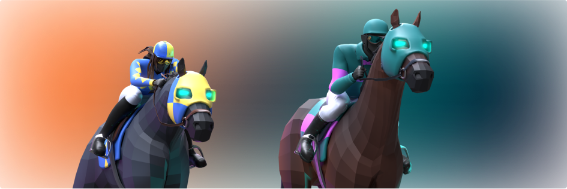
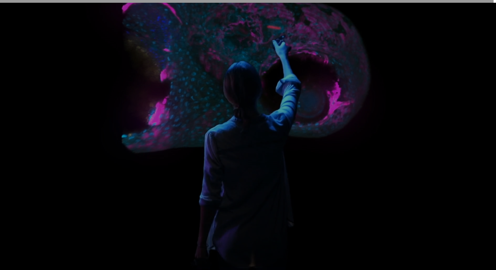
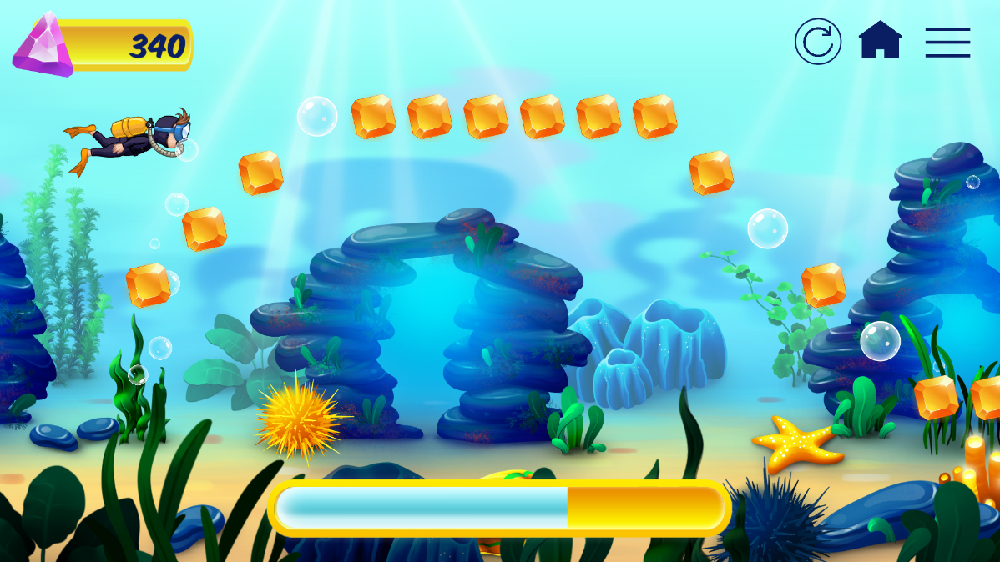
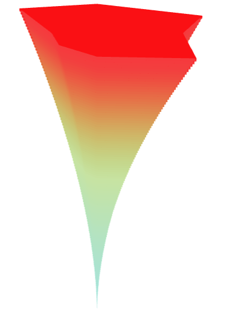
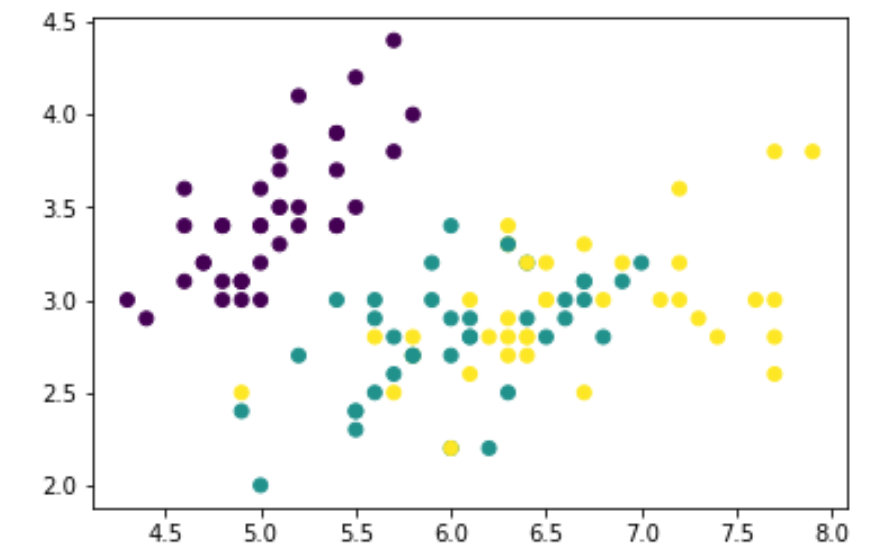
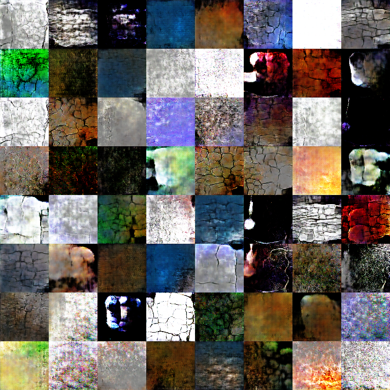

Projects and Experience
Work Experience

Stellar Dust
This is a VR RTS game built with the team at Robot Sea Monster Games, and the culmination of everything I've worked towards in computer science. To build an RTS after being born in the age of games like Command and Conquer, Dawn of War 1/2, Starcraft 1/2, Warcraft 3, ... this is a dream come true. My role in this project was to be the tech lead, working as effectively the architect owner and project manager (with the final say of what is prioritized by the CEO) for the majority of the year. I helped with every single facet of this project.The general premise of the game is that it is a 1v1 competitive game between two players on Quest 2/3/Pros, micromanaging a set of bases and drones on a hologram-like map to conquer territory and eliminate the opponent. There are additional win conditions such as king of the hill or capturing resources in a similar way to games like Company of Heroes 2, holding the point for resources. The gameplay is very similar to games like Mushroom Wars, but on VR.
For my role, I monitored up to 6 developers at a time on this project, working on architecture, project managing, and general development. The project managing side included task estimations and priorities set to move the project further and monitor progress made by everyone in every build (building weekly in Sprints and Agile methodology). One major part of being the team lead involves delegating tasks in a way that allows each developer to grow and own specific parts of the game- for example, one developer owned the AI and drone feature as domain knowledge experts of these topics, and another developer was a feature owner of the entire PHP laravel hosted server that talks to Playfab to create separate rooms. I also made sure to do task scoping and technical documentation, especially for newer developers to make sure that they could handle the tasks given to them. If the developer was struggling, I would go in to clarify and simplify parts of the task until the task became manageable, and I would write deeper documentation for devs that were newer to the team. Lastly, I did code reviews in a git flow that involved each developer having separate branches for major features and creating pull requests when the branch is ready, merging them in when they look good from a code perspective and functional test, or fixing the branch and commenting on the dev's code to next time fix parts of the code.
I had parts in all of gameplay programming, tools programming, network architecture and backend, game design, QA and bug fixing, and building and dev ops. The network architecture primarily relied on Photon Fusion and Playfab. Previous work I had done in Photon were using PUN2, so Fusion was a new adventure to me, though it was fairly similar to PUN2 and more feature complete. Playfab was entirely new as well. The network architecture connected Photon and Playfab together using a PHP Laravel server that called Playfab APIs from Unity side with nodejs. Photon Fusion 2 is the real time game multiplayer backend, dealing with game objects, real time game data, general room persistent objects, and dead reckoning, while Playfab is the room hosting service, matchmaker, and account data backend.
Oculus and Playfab were also combined to be used for authentication, profile account data, leaderboards and competitive play, and queue based matchmaking through rules from the leaderboard's score. Oculus authentication and Playfab's leaderboards are combined through the Oculus ID creating an account on Playfab's side to host data for the leaderboard. This is done so we have finite control over player data, especially when we want to create fake AI players on the leaderboard to be able to match the player with a number of different AI types.
There were multiple major refactors, including Tilia's removal to use OVR Input (controller and hand tracking), migrating from Photon Fusion 1 to Fusion 2, and moving to Dedicated Server mode from Host mode. The game had to be entirely rewritten when we decided to change to Dedicated Server, as we had all game logic in a system where one player is the host and the other is a client. Features like disconnect host migration were endlessly complex due to host and client logic being different. All game logic was ran on the host, enabling cheating from the host as well, ruining competitive integrity. The dedicated server became the host and all clients became clients, holding information from only that client and having all information come from Playfab's dedicated server build. Fusion 1 did not have as many features as Fusion 2, requiring a massive rewriting of much of the code base. Lastly, Tilia required a full rewrite of all input code, creating a major change in how we ran our input detection from Tilia's collider system to a physics collider sphere based on a specific point set by us.
I worked on many gameplay mechanics and programming pieces, including unit tracking and behavior, node GUI and types, in-game objective changes, random and predefined map generation, player controller input variations, hand tracking input, map manipulation, game settings, preference menus and UI tooltips on controller, art passes in meshes, menu and in-game UI, and more. The amount of work put into this project would be too much, and the fact that I also monitor, review, and know what each of my developers do increases this amount of work significantly. I am not only a feature owner of some pieces entirely such as hand tracking and UX variations, but also know enough of each of the specific parts of changed gameplay very well.
Lastly, since the dedicated server migration, I've been the main person to build, and the amount of steps to make a linux Docker dedicated server build to Playfab, into making a client android apk VR build for Oculus Quest Store App Lab is an insane amount of work, along with monitoring security, keystores, and making sure the two environments and release channels are separate between dev and prod.
It has been a wonderful adventure... I hope to revisit this card when the game finally releases!
Robot Sea Monster Games

Robot Sea Monster Games
This is an indie game studio that I work at building projects for different clients, as well as in-house projects. Key responsibilities that I hold as a Tech Lead are to work on development, management, and even client facing work. In particular, I am responsible for creating an underlying architecture for the project involved, writing up bite-sized tasks that are accomplishable within a small allocated budget, estimating time per task to make the project risk-free, making sure KPIs are met properly and user stories are focused in some priority to reach the target product goals, overseeing multiple junior developers in their ability to finish tasks on time and in good code quality, code reviewing and technical writing to keep up with the architecture changes, and communicating with the client to prevent any issues in development. Notable client projects that I have worked on include a social media application, an LLM Escape Room project (Harker's Escape), and other projects.The social media application is focused around allowing users to connect using a specialized grid post mechanism and globe feature, along with adding minigames to make the user experience better and more connected overall. This application's frontend and connection to backend was architected by me, which uses Unity to connect to the client's firebase backend. I decided that Photon would be the best way to create the simple multiplayer games that the client requested, and all of the Firebase calls were separated into 3 distinct managers to dictate which type of database was being used to get the Firebase calls. I also did high level scoping for 2 junior developers on this project in order to make sure that they have tasks to continue to work on the application, along with alleviating any risks that they run into, such as video player and video media, object pooling with infinite instantiation of grid posts, the multiplayer game, a unique globe asset, and other similar issues. I finished significant portions of the globe, multiplayer game, and building for android and iOS. Despite initial difficulties in meeting the estimated time requirements, the project was an overall success, leading to an extended contract between Robot Sea Monster Games and the client to continue to maintain the application, increasing the contracted number of hours that we could work on this project twice.
The LLM Escape Room (Harker's Escape) mechanics are done by me from the Unity side, which are designed in a way that allow a user to play the game using purely an LLM interaction dialogue. These mechanics include multiple crafting mechanics with attaching, detaching, moving around, picking up objects, throwing and dropping them, and more. Multiple UI integrations with the LLM, json inputs, and Unity's UI were also features that I worked on. I primarily was a supporting Unity developer on this project rather than the architecture owner.
Robot Sea Monster Games

I built the Unity side of this product in which I work directly with an art team to provide proper integration of shaders, materials, lighting, modeling, and overall design into Unity. I work with webGL and essentially am building a 3rd person walking simulator that allows users to interact with their horses, look at a large interactive area full of horse racing history, purchase a farm to be able to share and gamble on horses, and other features. I built the dialogue system, added scene transitions and asset bundles to AWS S3, and optimized the project for WebGL.
I also ingested a large amount of horses (10000+) from the jockey club API, placing them into a SQL table and keeping metadata on S3. This data is then used to create NFTs and mint them from an admin portal, in which I created multiple lambda functions in AWS that trigger through whenever a race is detected, writing to a Simple Queue System to notify and add to SQL with a Simple Notification System topic. Upon an admin minting the horse as an NFT, the moralis smart contract will trigger, and the AWS lambda function will call each other and ingest the metadata into SQL and S3. In addition to this, I worked on a Three.js Land minting portal, in which I wrote an ASP.NET API to allow the React frontend to call the backend through axios calls and allow users to purchase land NFTs through a smart contract with moralis, saving gas fee costs by letting users mint the land themselves.
Silks
Game of Silks
This is a metaverse/NFT/crypto startup that I worked at. Silks is a metaverse company focusing on making horse racing and gambling more interactive in a way that users can purchase horse avatars that represent real thoroughbred horses. The users can then gamble on real races through owning those horses, winning real money whenever the horse wins in a real race.I built the Unity side of this product in which I work directly with an art team to provide proper integration of shaders, materials, lighting, modeling, and overall design into Unity. I work with webGL and essentially am building a 3rd person walking simulator that allows users to interact with their horses, look at a large interactive area full of horse racing history, purchase a farm to be able to share and gamble on horses, and other features. I built the dialogue system, added scene transitions and asset bundles to AWS S3, and optimized the project for WebGL.
I also ingested a large amount of horses (10000+) from the jockey club API, placing them into a SQL table and keeping metadata on S3. This data is then used to create NFTs and mint them from an admin portal, in which I created multiple lambda functions in AWS that trigger through whenever a race is detected, writing to a Simple Queue System to notify and add to SQL with a Simple Notification System topic. Upon an admin minting the horse as an NFT, the moralis smart contract will trigger, and the AWS lambda function will call each other and ingest the metadata into SQL and S3. In addition to this, I worked on a Three.js Land minting portal, in which I wrote an ASP.NET API to allow the React frontend to call the backend through axios calls and allow users to purchase land NFTs through a smart contract with moralis, saving gas fee costs by letting users mint the land themselves.
Silks

I implemented multiplayer functionality with Photon and multi-user interaction for the application, added bioformats and itk api functionality allowing file types like .lif, .ims, and .czi files as input, parsing metadata and working on autogenerating detailed information of generating a 3D project, translating Java to C# code through dlls, adjusted the volume renderer algorithm and worked on different shader, cropping, filtering adjustments to the image, including multichannel direct volume rendering histogram changes to color and alpha points, adjusted sliders to work on the VR medium, including annotations using a brush tool, used AWS Lambda to save and load filtering/cropping/shader settings that are set for a specific image, and adjusted the volume renderer algorithm to limit frame and slice overload in large file inputs.
Microscape
Microscape
This is a startup in which I was a full stack developer at; this startup is in biotech focused on a product that allows users to add medical data and render the data as a 3D image, with tools allowing for coordination in viewing and uploading the image.I implemented multiplayer functionality with Photon and multi-user interaction for the application, added bioformats and itk api functionality allowing file types like .lif, .ims, and .czi files as input, parsing metadata and working on autogenerating detailed information of generating a 3D project, translating Java to C# code through dlls, adjusted the volume renderer algorithm and worked on different shader, cropping, filtering adjustments to the image, including multichannel direct volume rendering histogram changes to color and alpha points, adjusted sliders to work on the VR medium, including annotations using a brush tool, used AWS Lambda to save and load filtering/cropping/shader settings that are set for a specific image, and adjusted the volume renderer algorithm to limit frame and slice overload in large file inputs.
Microscape

I have done some quality of life focused tasks to make the main product a cleaner experience, adjusted and added new messages sent back and forth from the Python server from Unity, created a minimal viable product of a new minigame, and added small new features that make the flow of the product more engaging, such as a combo system, recalibration buttons, and UI to showcase issues with detecting breathing.
Prism
This is a startup in which I was a part time Unity developer at; this startup is a combination of Internet of Things with medical devices and gamification, essentially the product is using something like a Polar waistband to be able to play a game with breathing rate and other metrics, collecting the data for medical purposes.I have done some quality of life focused tasks to make the main product a cleaner experience, adjusted and added new messages sent back and forth from the Python server from Unity, created a minimal viable product of a new minigame, and added small new features that make the flow of the product more engaging, such as a combo system, recalibration buttons, and UI to showcase issues with detecting breathing.

Norvoc Bioscience
This is a biotech company that primarily focused on aging drug selling. The project is focused on using aging models to predict age of patients, in which I built the frontend and parts of the backend using React, Node.js, Mongodb, Synology servers, and Three.js for data visualization. The goal is to use ML models to predict the age of a patient, in which the website would display the results in a human readable format, especially focusing on a cone shape to generate the results. I used three.js to generate this generalized cylinder model, along with adjusting open GLSL code to write a shader for the gradient, using a proxy server of Node.js to gather data stored in Mongodb, and using React's components and functional programming to create a responsive website and mobile application for ios and android.

Most notably, the two Artificial Intelligence semesters were the toughest to teach and I did a significant amount more in both, including proctoring exams, being the main source of communication between the Professor and teaching staff, and creating a machine learning focused assignment teaching Google Colab and the ipynb pipeline. The four problems that the machine learning assignment focused on include a basic k-nearest neighbors classifier for the iris dataset from scratch using only numpy and matplotlib, an ensemble learning question that allowed any usage of sklearn's models to get the highest accuracy possible, a convolutional neural network question that takes the CIFAR-10 dataset and pushes students to try different networks in pytorch's nn-sequential model, and a recurrent neural network question that also used pytorch to create a basic recurrent neural network. This assignment was autograded as well through the nbgrader package. The picture on the left showcases one part of this assignment.
Teaching during Graduate School
I taught at USC through a multitude of classes, with the term Course Producer essentially being Grader: Fall 2019 CSCI 310 Software Engineering Course Producer, Spring 2020 CSCI 360 Artificial Intelligence Lead Course Producer, Spring 2020 CSCI 585 Graduate Databases Grader, Summer 2020 CSCI 455X Introduction to Programming Systems Design Grader, Fall 2020 CSCI 526 Mobile Games Grader, and Spring 2021 CSCI 360 Artificial Intelligence Teaching Assistant (Funded).Most notably, the two Artificial Intelligence semesters were the toughest to teach and I did a significant amount more in both, including proctoring exams, being the main source of communication between the Professor and teaching staff, and creating a machine learning focused assignment teaching Google Colab and the ipynb pipeline. The four problems that the machine learning assignment focused on include a basic k-nearest neighbors classifier for the iris dataset from scratch using only numpy and matplotlib, an ensemble learning question that allowed any usage of sklearn's models to get the highest accuracy possible, a convolutional neural network question that takes the CIFAR-10 dataset and pushes students to try different networks in pytorch's nn-sequential model, and a recurrent neural network question that also used pytorch to create a basic recurrent neural network. This assignment was autograded as well through the nbgrader package. The picture on the left showcases one part of this assignment.
Game Development and Design

Inside Job
This is a game built on Unity with the Photon Game Networking Architecture.Inside Job is an online multiplayer social deduction game inspired by games such as Among Us and Overcooked. Players are assigned roles such as “cops” or “robbers”. The robbers complete tasks to steal merchandise from the map, while the cops go undercover, pretending to be robbers while secretly trying to stop them. The robbers periodically can vote out members they believe to be cops. The game features whimsical art designs, cartoonish combat mechanics, and engaging social intrigue.
I focused specifically on multiple tasks: integrating the Photon Cloud network architecture with our Unity game, building pieces of the game involving dead reckoning, synchronization of game objects, and fleshing out the game design, building the lobby system and creating solutions for issues such as servers being in different locations, ping issues, and room finding and creating, and leading a team of three and presenting progress weekly. Overall, the project was a fun experience and I learned a lot on game networking architectures and how to create a multiplayer game in general.
Inside Job

Dungeon Smiths
This is a mobile (Android) game built on Unity, built in a team of 6. The team used sprints to work on the project over time, using version control systems and combining work on a week by week basis.Dungeon Smiths is a dungeon runner mobile game that switches between 2D and 3D mechanics throughtout the game. The game has a 3D space in which the player navigates mazes to find and interact with objects throughout the map in order to reach the next level. Ocassionally, upon reaching specific elements on the map such as encountering an enemy, the player jumps into a minigame in the 2D space. This game is split into three distinct levels, each with handcrafted enemies, obstacles, and minigames in both 3D and 2D space, seamlessly integrating the 3D exploration mode with the 2D minigames.
I focused specifically on building 2D minigames involving platformer mechanics and cutscenes. These minigames were predominantly endgame minigames, including the level 2 boss and level 3 boss. The level 2 boss was a platformer focused on jumping to a particular level of the map, similar to Jump King. The level 3 boss was a platformer designed in a similar fashion to Cuphead, focused on killing a boss through platformer mechanics. Other tasks I was in charge of included a Rat minigame destroying a large number of rats through using spells placed as particle effects, building a Minecart minigame which was a simple platforming movement minigame, and working on small tasks like the timer, cutscenes showing story elements, and adding simple menu UI for pausing and playing the game.
Dungeon Smiths

Social Deduction Game Design Page
This is a page filled with hundreds of pages of design on different pen and paper tabletop RPG games and social deduction games meant to be played on Discord. This isn't quite a technical project, but showcases all the creativity and significant gameplay mechanic designing that I have worked on in the past for game design related work. These games were playtested locally with some of my friends through Discord.SDG Game Design
Machine Learning and Research

Object Reconstruction
This project is a computer vision project focused on a concept named Object Reconstruction. The project is written in Python, using the Jupyter notebook and Anaconda distribution to formulate the code, and using OpenCV packages, Numpy libraries, and MeshLab. The concept of Object Reconstruction is to take a bunch of photos of an object using scanners and projectors, generate a mesh of each image, which are images focused on each individual side of the object, generate a baseline mesh from triangulation after figuring out camera calibration to find camera parameters, and finalizing the mesh using MeshLab to adjust the mesh with Poisson Surface Reconstruction.Some details include that camera calibration was through finding intrinsic and extrinsic parameters, reconstruction prioritizes creating a decode mask to filter improper pixels through XORing, and creating a point cloud with 3D points to create the shape of the mesh. Mesh clean up is done through Delaunay Triangulation, which is an algorithm that triangulates the exact mesh through the points from the point cloud. Poisson Surface Reconstruction and mesh alignment utilizes MeshLab, which is a tool that allows for easy clean up of the mesh and trying to push together the individual meshes into one model. After this step, the model is complete.
The project code can be released on request, but the report is below: feel free to look into the report for details of what exact algorithms are used and what process was taken to make the project happen.
Object Reconstruction

MDP Research
This project is a research project on Markov Decision Processes, focused on using Metric Temporal Logic Constraints on a translated abstract MDP for Value Iteration tasks. This project follows the basic formula for research projects, starting with reading multiple research papers to find a problem and come up with a creative solution, to writing a paper while conducting experiments using Python, networkx, pymdptoolbox, and py-metric-temporal-logic to test the abstract MDP algorithm against toy problems used in these packages. The basic concept is to use these logic formulas in MTL to forcibly control the Value Iteration process and prevent situations such as reward hacking, in which the AI behind the scenes attempts to cheat the reward system. The MDP is generally too large however, requiring an abstract MDP to control the MDP's size and shrink the graph into something that can use the MTL formulas to scalably apply the formulas against the graph. That is the summary of the problem and solution: how can we solve Value Iteration in an accurate and efficient way, and the solution is to create an abstract MDP with MTL Constraints.Unfortunately, I did not get to the point of submitting to a conference, but the final report is below if there is interest for the project concept.
MDP Research

XROS
Besides Microscape, one VR research experience I had is to help Powen Yao on his XR project related to peripersonal space in VR. What this meant is in VR, there are grabbable items located on the player object; in this case, this technology needed a better demo for showcasing the way peripersonal space works. The demo I worked on is a simple scene that allowed the user to grab colored swords on their belt in order to slice cubes of the same color generating towards the player. I added to this demo a better way to display the swords, a better cube mesh slicing, and better vfx and music across the board. This improved the overall scene and worked fully in VR.I also helped gather data for the papers that Powen was writing on ML in combination with XR and VR, such as repeating gestures to emulate moving my controller in a certain way.
XROS

One part of the project revolved reinforcement learning. The goal was to use ml-agents in order to make the AI play the turn based game's ruleset better. The deep q-learning model was trained for an extensive amount of time, but there were no notable changes, even with multiple AI brains and proximal policy optimization.
The other project revolved around generative adversarial networks. Hovenstar had an issue of static tile assets and tiles that required artist input in order to create. By using a generative adversarial network, the process of tile generation is much easier, as the machine learning model can simply do the work of the artist. I processed a ton of different Unity assets off the asset store, gathered all the tiles as a dataset for the GAN, and used openCV methods to transform the data and expand the amount of data that I had. I then trained the GAN on this dataset and generated a number of tiles for usage in any tile based game, with some fitting Hovenstar's design.
Very interestingly, the project has taken off by parts of the original team, now named as Paraside: Duality Unbound. It can be found here: Paraside: Duality Unbound. I saw this game during Pax West, and it is definitely a different experience looking at a game showcase as someone who saw the game in a previous alpha build.
Applied ML in Hovenstar Demo
Applied ML in Hovenstar Slides
Applied ML in Hovenstar
Hovenstar was a project that others built in an Advanced Games Project course, which was a turn based game that played similarly to Into the Breach. A couple of the original developers wanted some tools created using machine learning and better artificial intelligence to fight against, so I helped them do the following:One part of the project revolved reinforcement learning. The goal was to use ml-agents in order to make the AI play the turn based game's ruleset better. The deep q-learning model was trained for an extensive amount of time, but there were no notable changes, even with multiple AI brains and proximal policy optimization.
The other project revolved around generative adversarial networks. Hovenstar had an issue of static tile assets and tiles that required artist input in order to create. By using a generative adversarial network, the process of tile generation is much easier, as the machine learning model can simply do the work of the artist. I processed a ton of different Unity assets off the asset store, gathered all the tiles as a dataset for the GAN, and used openCV methods to transform the data and expand the amount of data that I had. I then trained the GAN on this dataset and generated a number of tiles for usage in any tile based game, with some fitting Hovenstar's design.
Very interestingly, the project has taken off by parts of the original team, now named as Paraside: Duality Unbound. It can be found here: Paraside: Duality Unbound. I saw this game during Pax West, and it is definitely a different experience looking at a game showcase as someone who saw the game in a previous alpha build.
Applied ML in Hovenstar Demo
Applied ML in Hovenstar Slides
Mobile and Web Development
/HomeFragment.PNG)
Movie Details: Android App
This is an Android Application using Java and Android Studio as the frontend, Nodejs and Express as the backend proxy server, The Movie Database as a database, and Google Cloud Platform as a hosting service.This application is designed for users to be able to view a movie's details through The Movie Database, showcasing details, cast, reviews, and more backend data of a particular movie or TV show through Android devices. The application design maintained a frontend and backend despite the fact that it isn't a website: the same principles of load balancing and shooting the HTTP requests from the backend is cleaner and better practice. The choice of using standard Java and Android Studio is simply because Java is better documented than recent languages. The application is built on Fragments, separating parts of the application into clean modules. The backend has dynamic content served through the HTTP requests reaching TMDB's APIs and pulling JSON through the Nodejs and Express proxy server for the application.
The actual app is not hosted directly on github pages, just a project description page showcasing what was done. On request, I can give code/show the actual website in action.
Movie Details: Android App
/HomePageCarousel.PNG)
Movie Details: Website
This is a website using HTML, CSS, JS, Angular, Typescript, and Bootstrap as the frontend, Nodejs and Express as the backend proxy server, The Movie Database as a database, and Google Cloud Platform as a hosting service.This website is designed for users to be able to view a movie's details through The Movie Database, showcasing details, cast, reviews, and more backend data of a particular movie or TV show. The website design forced the dynamically served content through a backend built by Nodejs and Express as a proxy server. This proxy server split the load pressure by calling TMDB APIs in the backend, making it easier for the frontend to display the webpage under a heavier load. The frontend is built through Angular and Bootstrap, key frontend frameworks that make the design of the page much simpler to handle and makes the page easier to handle in building the frontend compared to deliberately creating the frontend with HTML and CSS.
The actual page is not hosted directly on github pages, just a project description page showcasing what was done. On request, I can give code/show the actual website in action.
Movie Details: Website
/HomePage.PNG)
Movie Scraper
This is a website using HTML, CSS, and JS as a frontend, python and flask as a backend proxy server, The Movie Database as a database, and Microsoft Azure as a hosting service.This website is designed for users to be able to search for movies through The Movie Database, finding details, cast, and reviews of a particular movie or TV show. The website design required use of a frontend and backend ecosystem to create a proper proxy server to pull JSON from the database. Python and flask were used to create that proxy server to split load pressure from directly calling TMDB APIs in the frontend, making it easier for the frontend to display the webpage under a heavier load. The frontend is not responsive, as the focus of the website is to emphasize good practice for backend.
The actual page is not hosted directly on github pages, just a project description page showcasing what was done. On request, I can give code/show the actual website in action.
Movie Scraper

Yelp Camp
This is a website using HTML, CSS, JS, and Bootstrap as a frontend, Nodejs and Express as a backend proxy server, Mongodb as a Nosql database, and Heroku as a hosting service.This website is designed for users to be able to create, view, review, and comment on different campgrounds that are all hosted within a Mongodb database. The mongodb holds together all authentication, campground information, and comments. The heroku service holds together the backend and hosts the entire site. Although this site's purpose is simple, the site is designed to show basic elements of frontend and backend development combined, including processes like hosting to the cloud and using a database to fuel dynamically created content.
Yelpcamp

Patatap Clone
This is an app that uses different libraries in addition to html, css, and js to make a Patatap Clone. The libraries include howler.js and paper.js, for sound and animation respectively.Patatap is an application that allows the user to push letters a-z on the keyboard to create animations and music. In this case, any key pressed from a-z creates a noise along with a small circle that shrinks quickly. This application is demonstrative of howler.js and paper.js's functions and how to incorporate these functions into the code of the front-end. The howler.js allows for different sounds to be played depending on the key pressed and paper.js allows for different colored circles to appear when the keys are pressed.
Note: Neither howler.js nor paper.js is my code/property and I'm merely using it to create this patatap clone. This is all for non-commercial use/practice.
Patatap Clone

Color Game
This is a game built on html, css, and javascript that is designed to focus on DOM manipulation and interacting with javascript with the front-end code.This game's goals are to have the user select the correct RGB color from the 6 (or 3 if the difficulty is set to Easy) colors. The user can select a color by clicking on a square. The user can reset the game by clicking on New Game or by changing the difficulty. Once a color is considered correct, all 6 clickable squares and the exterior border becomes that color. If a clicked color is incorrect, the clicked square will disappear.
Color Game

Todo List
This is an app built on html, css, javascript, and jQuery.This application allows a user to add to a todo list, allowing a user to add new elements to the list with the input below the title, delete elements that are done by clicking the revealable button to the left of the particular element, cross out elements that are done by clicking on the element itself, and reveal and remove the user input by clicking on the plus sign. These use cases are similar to what someone needs for a checkbook and all use jQuery methods to allow the Javascript to work with the rest of the front-end code. All clickable items use jQuery's functions such as fading in and out.
Todo List

AP Art Studio 2D Portfolio
This is an image gallery of previously created artwork during my high school years. All of the artwork seen in each page (e.g. my home page's acryllic painting) are from a 2D Portfolio that I had done years ago.Just a note: do not use this artwork on other sites/areas without permission/credit. This artwork is only displayed as more practice for html/css grid designs.
AP Art Studio 2D Portfolio